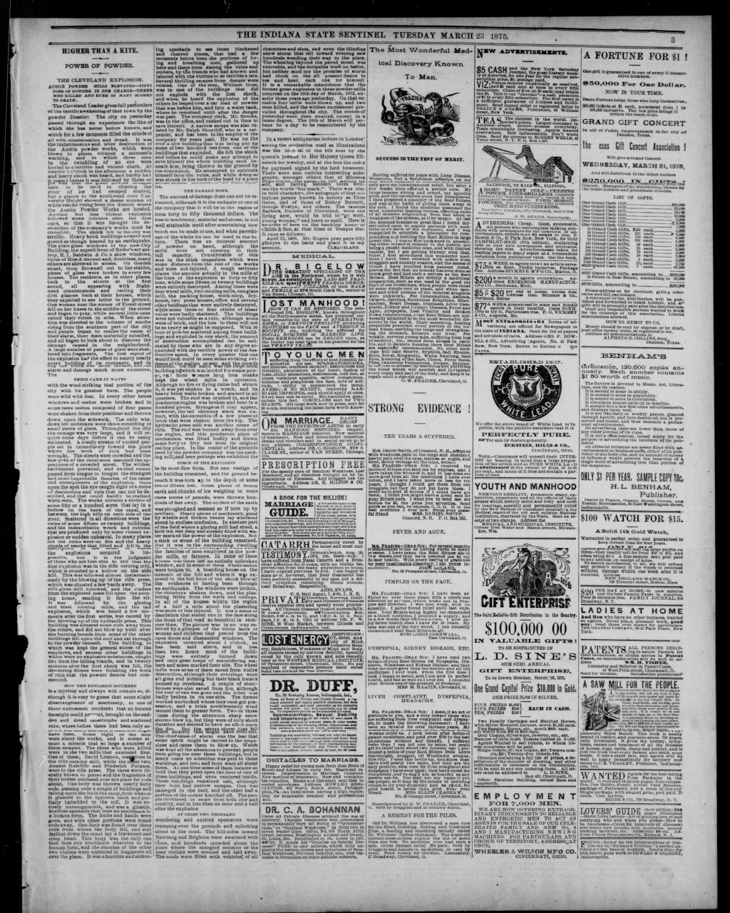

HN HN-230 · March 23, 1875 · Disasters, Accidents & Emergencies > Explosions, Industrial & Workplace Disasters > Factory explosions
Austin powder works explosion is 16 March 1875; linked Brooklyn Eagle citation says 17 March 1874, with separate 1872 explosion.
Source: Indiana State Sentinel, p. 3, quoting the Cleveland Leader — original page.
Report: Explosions at the Austin Powder Works near Cleveland destroyed many industrial buildings, shattered windows across the city and reportedly killed three men. The source estimated forty to fifty tons of powder in the affected facilities. It also noted that a smaller explosion had struck the same works in March 1872, making the recurrence a contemporary concern.
Assessment: Detailed industrial-disaster reportage, not a proven technical cause. The powder quantity is a rough estimate and specific accident inquiries remain unreviewed. Follow-up open.
Class: Metadata/identity (M)
Recorded difference/concern: Austin powder works explosion is 16 March 1875; linked Brooklyn Eagle citation says 17 March 1874, with separate 1872 explosion.
Assessment: Potentially mistaken article identity. Held from same-event source count.
Source links: https://sites.google.com/site/cuyahogahtshistorical/industry
Authentic images retrieved from Hoosier State Chronicles (Indiana State Library). Article crops are located using the archive's own OCR word coordinates and rendered at native crop resolution; article clips are assembled from the archive's own article-block images; page images marked "archive tiles" are stitched from the archive's own tiled page service at its 256-px tile cap; page images marked "issue PDF" are single pages rasterised from the archive's own issue PDF, with the page chosen by matching the headline against the PDF's text layer; page scans are reduced-size access renditions. No images were generated, mocked, or retouched.

Not yet acquired. Queued for provider-specific acquisition testing (see source-acquisition manifest).
URL (preserved verbatim): https://newspapers.library.in.gov/?a=d&d=ISST18750323.1.3
Saved research report: Historical_Newspaper_Event_Research_228-252_2026-10-22.md
Evidence note: A newspaper report means a historical publication made a claim; it does not establish that claim as fact. Contemporary reporting is separated from later scholarly context and our own assessment.